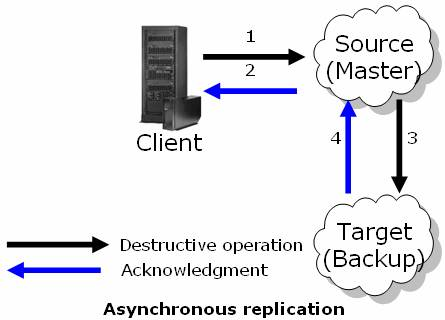

In asynchronous replication, operations are performed in the source space instance, and acknowledgement is immediately returned to the client. Operations are accumulated in the source space and sent asynchronously to the target space, after a defined period of time has elapsed, or after a defined number of operations have been performed (the first one of these that occurs). This replication type offers the highest performance at the cost of possible data lose of latest operations if the source space instance fails (sudden crash) while transferring the accumulated operations to the target space. Another problem is data coherency - the source and the target do not have identical data all the time.
In general you should have the cluster-config.groups.group.repl-policy.replication-mode property set to async. See below example:
<os-core:embedded-space id="space" space-name="mySpace">
<os-core:properties>
<props>
<prop key="cluster-config.groups.group.repl-policy.replication-mode">async</prop>
</props>
</os-core:properties>
</os-core:embedded-space>
In addition you should change cluster-config.groups.group.repl-policy.processing-type to global-order if async replication is used between primary and its backup.
Asynchronous replication provides fastest performance because the replication is executed asynchronously to the operation. However, this comes with a cost of possible data loss of recent operations upon unexpected failures (sudden crash). Therefore, an application that is using asynchronous replication must be aware to this fact.
The source space:
Asynchronous worker wakes up on demand (interval passed or pending operations exceeded).
Once they are received at the target space, the operations are processed according to their order.
The next batch is sent when the target space completes processing the replication packet.

Due to the asynchronous nature of the replication channel, when a replication target space instance is unavailable (disconnection) or some error occurred during the processing of the replication data at the target the channel will keep operating in the same way, it will keep the operation in the redo log until it succeeds replicating the operations.
In the previous scenario, a target space instance might become unavailable because it has been restarted or relocated due to various reason (failure, manual/automatic relocation). In the default settings, when that target space instance will restart, it will perform a recovery from a source space instance. In primary backup topology it will be the primary space instance, in active active topology it can be any space instance. The target space instance will not be available until the source channel redo log size is almost empty, thus making sure that once the target space is available and visible, the number of operations that might be lost if a failure occurs will be minimal.
The asynchronous worker of the channel can wake up and start replicating for two reasons:
The worker will wake up and replicate if either of these two occurs. The following parameters controls these behavior and a few more options:
| Property | Description | Default Value |
|---|---|---|
| cluster-config.groups.group.repl-policy.async-replication.repl-chunk-size | Number of packets transmitted together on the network when the replication event is triggered. The maximum value you can assign for this property is repl-interval-opers. |
500 |
| cluster-config.groups.group.repl-policy.async-replication.repl-interval-millis | Time (in milliseconds) to wait between replication operations. | 3000 [ms] |
| cluster-config.groups.group.repl-policy.async-replication.repl-interval-opers | Number of destructive operations to wait before replicating. | 500 |
To change the default replication settings you should modify the space properties when deployed. You may set these properties via the pu.xml or programmatically. Here is an example how you can set the replication parameters when using the pu.xml:
<os-core:embedded-space id="space" space-name="mySpace">
<os-core:properties>
<props>
<prop key="cluster-config.groups.group.async-replication.repl-chunk-size">1000</prop>
</props>
</os-core:properties>
</os-core:embedded-space>
When a source space instance is closed, it may have pending replication packets in its redo log because there were still not replicated. During this process, the space instance will stop accepting new operations and try to gracefully shutdown the replication channel and wait for all pending replication packets to be sent before completely shutting down. This graceful shutdown timeout can be configured with the following property:
| Property | Description | Default Value |
|---|---|---|
| cluster-config.groups.group.repl-policy.async-replication.async-channel-shutdown-timeout | Determines how long (in milliseconds) the primary space will wait for pending replication to be replicated to its targets before shutting down. | 300000 [ms] |